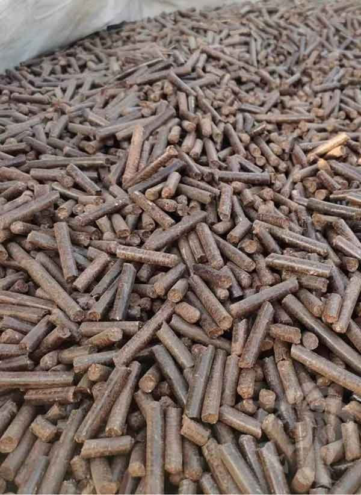

Recyclingkunststoffe
Gemischte Recyclingkunststoffe sind eine bislang unzureichend genutzte industrielle Ressource. Das CIRPAL-Konzept ermöglicht die praktische Nutzung unterschiedlicher recycelter Polymerströme.
Zirkuläre Wertschöpfung beginnt beim Material. Recyclingkunststoffe und Agrarreststoffe können qualifiziert, compoundiert und zu langlebigen Industrieanwendungen verarbeitet werden.



Gemischte Recyclingkunststoffe sind eine bislang unzureichend genutzte industrielle Ressource. Das CIRPAL-Konzept ermöglicht die praktische Nutzung unterschiedlicher recycelter Polymerströme.
Reishülsen, Stroh, Zuckerrohr-Bagasse, Kokosfasern und weitere regionale Reststoffe können einen ergänzenden Rohstoffstrom für Verbundanwendungen bilden.
Die kommerzielle Herausforderung besteht darin, variable Reststoffströme in verlässliche Materialspezifikationen für eine gleichbleibende industrielle Fertigung zu überführen.
Der Weg vom zurückgewonnenen Material zu einem reproduzierbaren Industrieprodukt erfordert kontrollierte Sortierung, Rezepturentwicklung und Validierung. TREON koordiniert Markt- und Partneranforderungen; spezialisierte Technologie- und Produktionspartner definieren die technischen Arbeiten für den jeweiligen Rohstoff und die Anwendung.
Eingehende Recyclingkunststoffe und Naturfaserreste müssen vor der Zuordnung zu einer Rezeptur auf Zusammensetzung, Feuchtigkeit und Verunreinigungen geprüft werden.
Materialrezepturen, Verarbeitungsparameter und Produkteigenschaften benötigen dokumentierte Versuche, bevor eine zirkuläre Verbundpalette in Richtung industrieller Umsetzung weiterentwickelt werden kann.
Lokale Rückgewinnung, Verarbeitung und Fertigung können Transportwege verkürzen und zirkuläre Materialketten in Thailand, Singapur und weiteren asiatischen Märkten unterstützen.
Bei Paletten aus Recyclingkunststoff in Asien geht es nicht nur um die Nutzung von Reststoffen. Entscheidend ist ein qualifizierter Materialstrom, der eine verlässliche Produktion, wiederholte Nutzung und eine organisierte Rückführung in künftige Materialkreisläufe unterstützt.
Sprechen Sie mit TREON über Marktentwicklung, Produktionspartnerschaften, Rohstoffe oder kommerzielle Zusammenarbeit.